自定义布局
Visual Studio Code 拥有简洁的用户界面和方便的默认布局。同时，VS Code 提供了各种选项和设置，让你可以根据自己的偏好和工作方式自定义 UI 布局。在本主题中，我们将重点介绍各种 UI 自定义功能，让你能够以最能提高工作效率的方式显示视图、编辑器和面板。
本文首先讨论工作台自定义，以重新排列侧边栏、视图和面板等 UI 元素。本文后面部分将介绍编辑器区域的自定义，包括编辑器组、并排编辑器和编辑器标签页。
[!NOTE]
如果你刚接触 VS Code，建议先阅读用户界面概述或查看技巧与窍门文章。
工作台
主侧边栏
默认情况下，主侧边栏位于工作台左侧，显示资源管理器、搜索和源代码管理视图。你可以通过选择活动栏中的图标在这些视图之间快速切换。
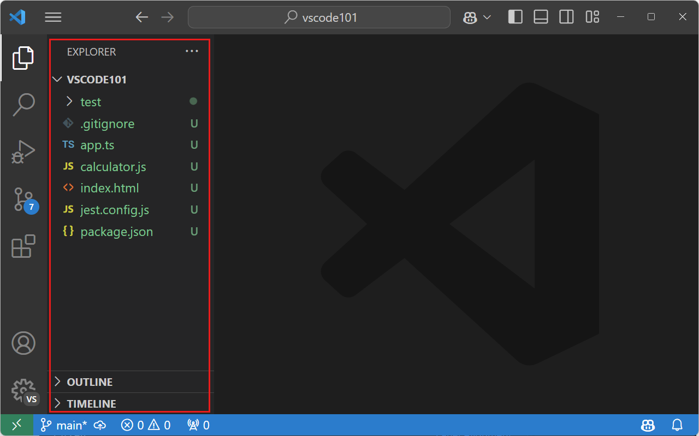
要更改主侧边栏的位置，你可以：
- 右键单击活动栏，选择 Move Primary Side Bar Right（将主侧边栏移到右侧）
- 运行 View: Toggle Primary Side Bar Position（视图：切换主侧边栏位置）来左右切换主侧边栏
- 使用 查看 > 外观 > Move Primary Side Bar Right（将主侧边栏移到右侧）菜单项
- 在设置编辑器中将 Workbench > Side Bar: Location（
setting(workbench.sideBar.location)）设置设为right辅助侧边栏
默认情况下，VS Code 在编辑器区域左侧的主侧边栏中显示视图。有时同时查看两个视图会很有用。为此，你可以使用辅助侧边栏来在主侧边栏的对侧显示视图。无论你是否切换了主侧边栏的位置，辅助侧边栏始终位于主侧边栏的对侧。
当你首次打开文件夹或多根工作区时，辅助侧边栏默认显示。在空白窗口中，它默认隐藏。你可以使用 setting(workbench.secondarySideBar.defaultVisibility) 设置来配置此行为。
下图显示了主侧边栏中的资源管理器视图和辅助侧边栏中的 Copilot Chat 视图：
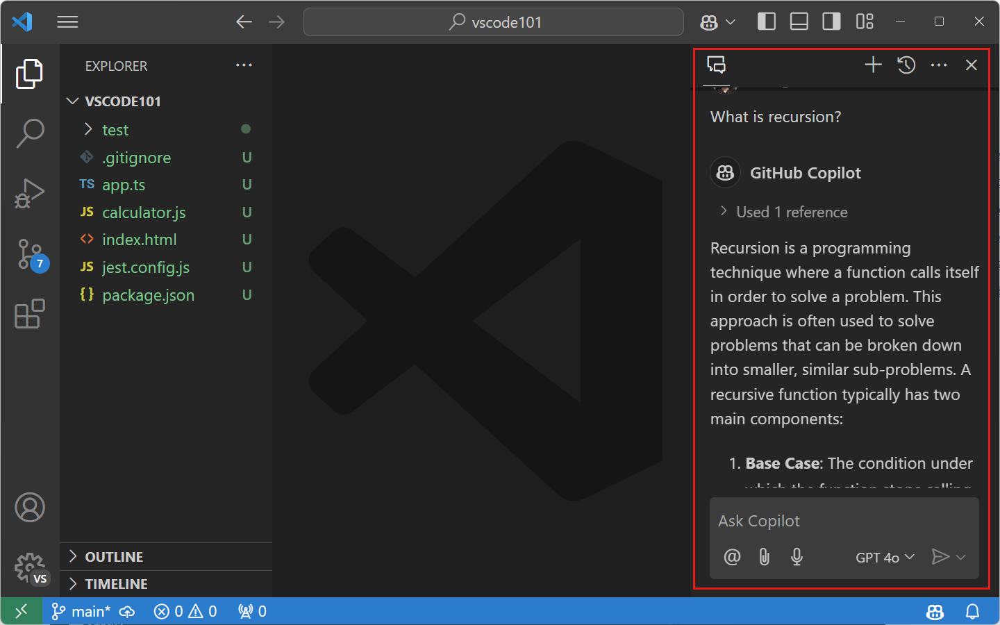
如果辅助侧边栏被隐藏，你可以使用 VS Code 标题栏中的布局控件来显示它。如果布局控件不可见，请右键单击 VS Code 标题栏并选择 Layout Controls（布局控件）。
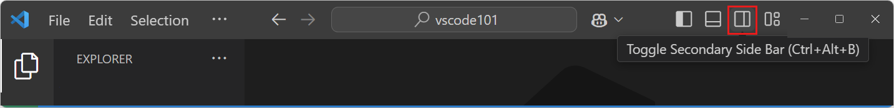
或者，你还可以通过以下方式打开辅助侧边栏：
- 运行 View: Toggle Secondary Side Bar Visibility（视图：切换辅助侧边栏可见性）命令（或按
kb(workbench.action.toggleAuxiliaryBar)） - 使用 查看 > 外观 > Secondary Side Bar（辅助侧边栏）菜单项
你可以随时将视图和面板拖放到主侧边栏或辅助侧边栏中。VS Code 会记住跨会话的视图和面板布局。

[!NOTE]
你可以使用 View: Reset View Locations（视图：重置视图位置）命令将视图和面板重新设置回其默认位置。
命令面板位置
你可以通过用鼠标光标抓住命令面板的顶部边缘并将其拖到其他位置来移动命令面板。你还可以选择标题栏中的 Customize Layout（自定义布局）控件，然后选择预设的 Quick Input Positions（快速输入位置）之一。

活动栏位置
默认情况下，活动栏随主侧边栏移动并保持在工作台的外边缘。你还可以选择隐藏活动栏，或将其移动到主侧边栏的顶部或底部。
Activity Bar Position（活动栏位置）菜单可从活动栏上下文菜单中找到，或在 查看 > 外观 > Activity Bar Position（活动栏位置）下有 Default（默认）、Top（顶部）、Bottom（底部）或 Hidden（隐藏）选项。
当活动栏位于顶部或底部位置时，通常位于活动栏底部的账户和管理按钮会移动到标题栏的右侧。
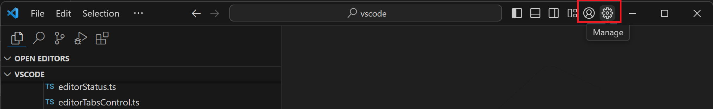
活动栏大小
活动栏支持两种大小：较大的默认大小和与经典活动栏外观匹配的紧凑大小。要切换到紧凑模式，请将 setting(workbench.activityBar.compact) 设为 true。
你还可以通过右键单击活动栏并从 Activity Bar Size（活动栏大小）子菜单中选择 Default（默认）或 Compact（紧凑）来在大小之间切换。
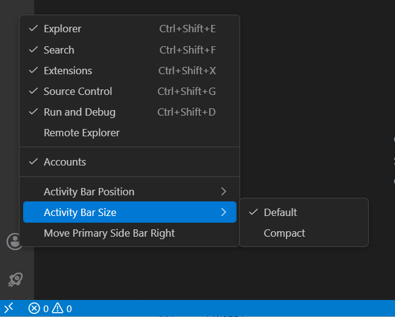
[!NOTE]
Activity Bar Size（活动栏大小）子菜单仅在活动栏处于默认（侧边）位置时出现。如果活动栏被移动到顶部或底部，大小选项将不可用。
自定义布局控件
VS Code 标题栏还包含用于切换主要 UI 元素（侧边栏和面板区域）可见性的按钮。
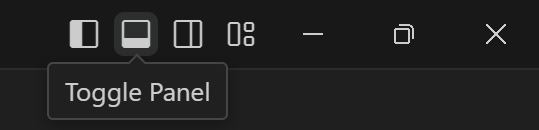
最右侧的按钮会弹出 Customize Layout（自定义布局）下拉菜单，你可以在其中进一步更改各种 UI 元素的可见性和布局，其中包含几种布局模式：
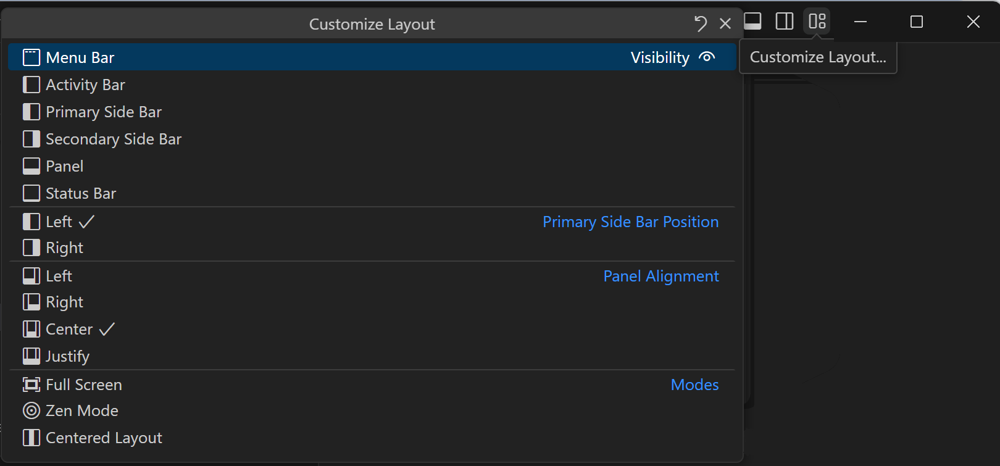
布局模式包括：
- 全屏 - 将编辑器设置为填满整个显示屏幕。View: Toggle Full Screen（视图：切换全屏模式）（
kb(workbench.action.toggleFullScreen)）。 - 禅模式 - 隐藏除编辑器区域之外的所有 UI。View: Toggle Zen Mode（视图：切换禅模式）（
kb(workbench.action.toggleZenMode)）。 - 居中布局 - 将编辑器在编辑器区域内居中。View: Toggle Centered Layout（视图：切换居中布局）。
窗口和菜单样式
你可以使用以下设置自定义 VS Code 窗口和菜单栏的外观：
setting(window.titleBarStyle)：调整 VS Code 窗口标题栏的外观，可以是操作系统原生样式或自定义样式。更改需要完全重启才能生效。setting(window.title)：根据当前上下文（例如打开的工作区或活动编辑器）配置 VS Code 窗口标题。变量将根据上下文进行替换。例如，${activeEditorShort}将显示当前活动编辑器的文件名。你可以组合多个变量，例如${dirty}${activeEditorShort}${separator}${rootName}${separator}${profileName}${separator}${appName}。setting(window.titleSeparator)：在setting(window.title)设置中使用的分隔符。setting(window.menuStyle)：调整菜单样式，可以是操作系统原生样式、自定义样式，或继承标题栏样式（在setting(window.titleBarStyle)中定义）。这也会影响上下文菜单的外观。更改需要完全重启才能生效。setting(window.menuBarVisibility)：配置菜单栏的可见性。classic：菜单栏显示在窗口顶部，仅在窗口处于全屏模式时隐藏。visible：菜单栏始终可见，即使窗口处于全屏模式也是如此。toggle：菜单栏被隐藏，按一次 Alt 键便可使其可见。compact：菜单移入侧边栏。hidden：菜单栏始终隐藏。面板
面板区域显示问题、终端和输出面板等 UI 元素，默认位于编辑器区域下方。
面板位置
你可以将面板区域移动到编辑器的左侧、右侧、底部或顶部。你可以在 查看 > 外观 > Panel Position（面板位置）菜单中配置这些选项，也可以通过面板标题栏的上下文菜单进行配置。
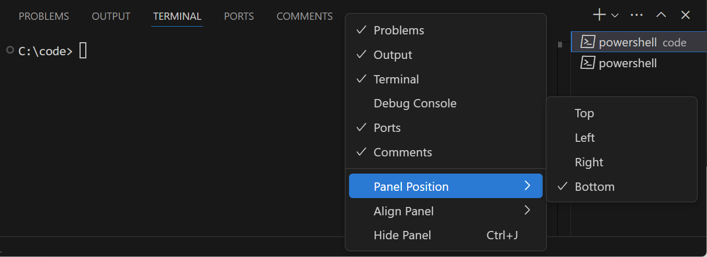
你还可以使用命令面板中的 Move Panel（移动面板）命令：
- View: Move Panel Left（视图：将面板移到左侧）（
workbench.action.positionPanelLeft） - View: Move Panel Right（视图：将面板移到右侧）（
workbench.action.positionPanelRight） - View: Move Panel To Bottom（视图：将面板移到底部）（
workbench.action.positionPanelBottom） - View: Move Panel To Top（视图：将面板移到顶部）（
workbench.action.positionPanelTop）面板对齐
此选项让你配置底部面板在窗口中的伸展宽度。共有四个选项：
- Center（居中）- 这是默认行为。面板仅跨越编辑器区域的宽度。
- Justify（对齐）- 面板跨越窗口的整个宽度。
- Left（左侧）- 面板从窗口左边缘延伸到编辑器区域的右边缘。
- Right（右侧）- 面板从窗口右边缘延伸到编辑器区域的左边缘。
对于所有面板对齐选项，活动栏被视为窗口的边缘。
你可以在 查看 > 外观 > Align Panel（对齐面板）菜单、面板标题上下文菜单中配置这些选项，或使用新的 Set Panel Alignment to...（设置面板对齐方式为...）命令。
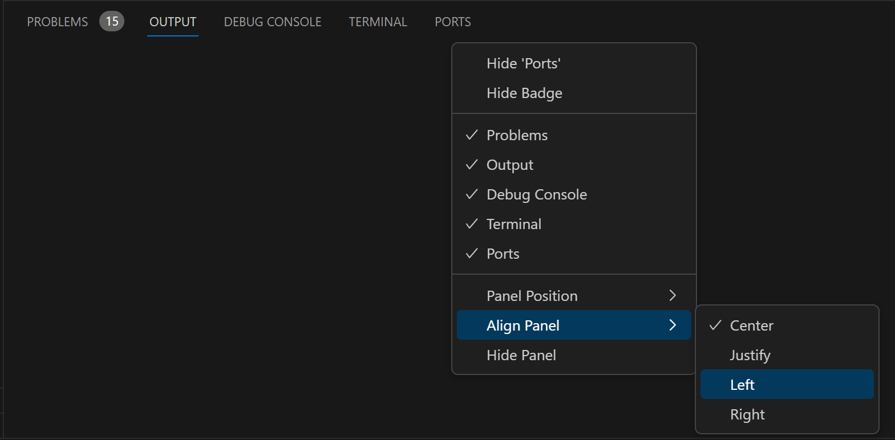
最大化面板大小
当面板对齐方式为 Center（居中）时，你可以使用面板区域右上角的 Maximize Panel Size（最大化面板大小）箭头按钮快速切换面板区域以填充整个编辑器区域。在最大化面板中，箭头按钮指向下方，用于将面板恢复到原始大小。
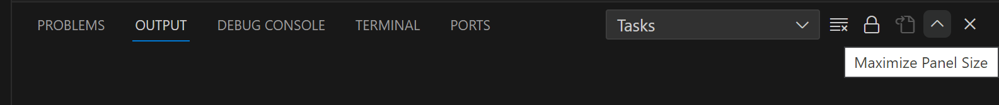
你还可以通过 View: Toggle Maximized Panel（视图：切换最大化面板）命令来最大化面板区域。
[!NOTE]
除了自定义整个面板区域的显示之外，各个面板可能还有自己的布局自定义选项。例如，终端允许你拥有多个打开的标签页和拆分现有终端。
拖放视图和面板
VS Code 在主侧边栏和面板区域中具有默认的视图和面板布局，但你可以在这些区域之间拖放视图和面板。例如，你可以将源代码管理视图拖放到面板区域中，或将问题面板放入主侧边栏中：
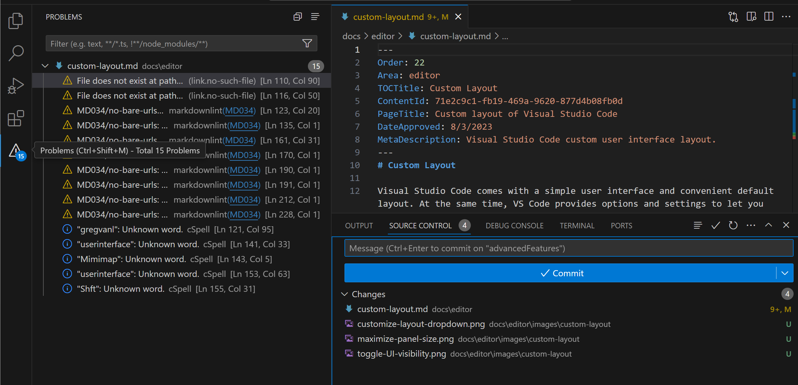
[!NOTE]
请记住，你可以使用 Reset Location（重置位置）上下文菜单项将视图和面板重置回其默认位置，或使用通用的 View: Reset View Locations（视图：重置视图位置）命令重置所有视图和面板。
你还可以将视图和面板添加到现有视图或面板中以创建组。例如，你可以将输出面板拖放到资源管理器活动栏项上，然后放入该视图中，从而将其移动到资源管理器视图组中：
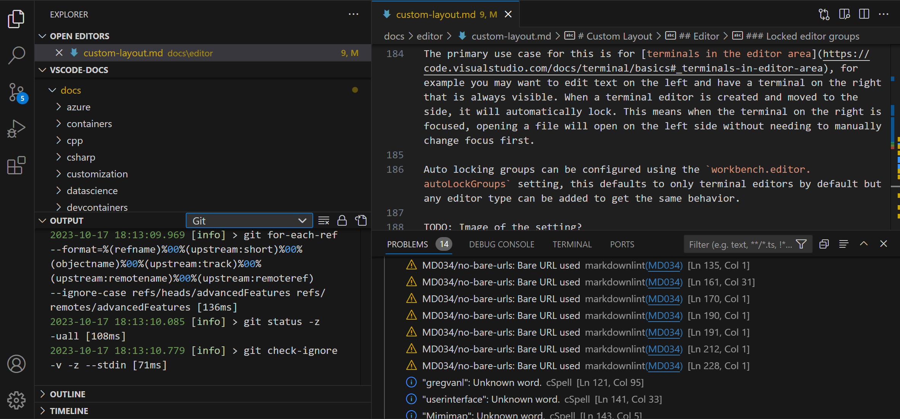
你不必仅使用鼠标来移动视图和面板。你也可以通过键盘使用 View: Move View（视图：移动视图）和 View: Move Focused View（视图：移动聚焦视图）命令来自定义布局，其中下拉菜单让你选择要移动的 UI 元素和目标位置，可以是侧边栏或面板区域等位置，也可以是现有视图或面板以创建组。
通知
默认情况下，Visual Studio Code 在工作台的右下角显示通知弹窗和通知中心。你可以使用 setting(workbench.notifications.position) 设置（实验性）来更改通知的位置。
可用位置包括：
bottom-right（默认）- 通知出现在右下角。铃铛图标位于状态栏中。bottom-left- 通知出现在左下角。铃铛图标移动到状态栏的左侧。top-right- 通知从右上角滑入，类似于操作系统级别的通知。铃铛图标从状态栏移动到标题栏。
你还可以直接从通知中心更改通知位置。通过选择铃铛图标打开通知中心，然后选择标题工具栏中的位置图标来选择不同的位置。
当通知位置设置为 top-right 时，使用 setting(workbench.notifications.showInTitleBar) 设置来控制铃铛图标是否在标题栏中可见。
工具栏
大多数 VS Code 视图和面板在其 UI 顶部右侧都显示工具栏。例如，搜索视图有一个工具栏，包含 Refresh（刷新）、Clear Search Results（清除搜索结果）等操作：
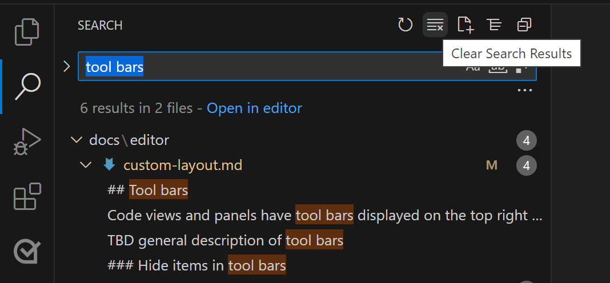
隐藏工具栏中的项
如果你觉得工具栏过于拥挤，想要隐藏不常用的操作，你可以右键单击任何操作并选择其 Hide（隐藏）命令（例如 Hide 'Clear Search Results'（隐藏"清除搜索结果"）），或取消选中下拉菜单中的任何操作。被隐藏的操作会移动到 ... More Actions（更多操作）菜单中，可以从那里调用。
要将操作恢复到工具栏，请右键单击工具栏按钮区域，选择 Reset Menu（重置菜单）命令，或重新选中被隐藏的操作。要恢复 VS Code 中的所有菜单，请从命令面板运行 View: Reset All Menus（视图：重置所有菜单）（kb(workbench.action.showCommands)）。
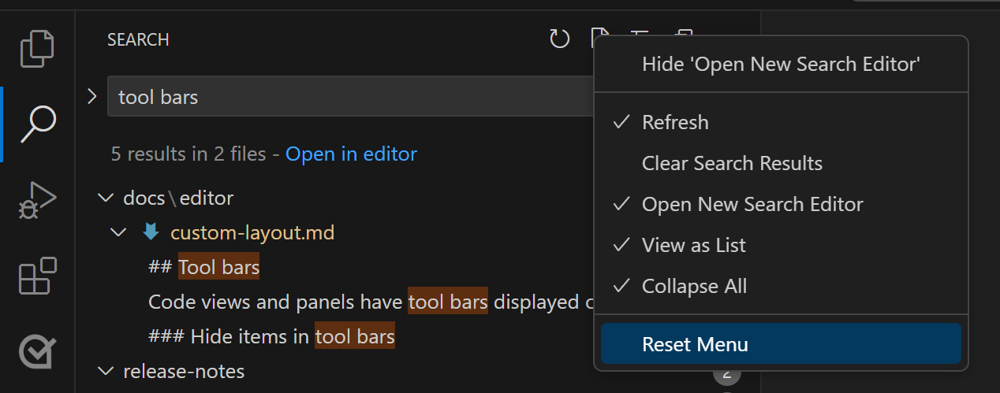
编辑器
你可以独立于工作台用户界面来自定义 VS Code 编辑器区域的布局。默认情况下，编辑器区域显示实用功能，如迷你地图、面包屑导航、编辑器标签页，并具有可选 UI，如粘性滚动。你还可以调整编辑器本身的布局或将它们移入浮动窗口。
迷你地图和面包屑导航
查看 > 外观菜单中有一个用于自定义编辑器区域的部分。在那里你可以找到以下功能的切换开关：
- Minimap（迷你地图）- 当前文件的可视化概览。View: Toggle Minimap（视图：切换迷你地图）。
- Breadcrumbs（面包屑导航）- 显示活动文件的文件夹、文件和当前符号信息。View: Toggle Breadcrumbs（视图：切换面包屑导航）。
- Sticky Scroll（粘性滚动）- 在活动文件中显示嵌套符号作用域。View: Toggle Sticky Scroll（视图：切换粘性滚动）。
编辑器组
默认情况下，每个打开的编辑器都进入同一个编辑器组，并在右侧添加一个新的编辑器标签页。你可以创建新的编辑器组以便对相似或相关的文件进行分组，或允许对同一文件进行并排编辑。
通过将编辑器拖到一侧，或使用编辑器标签页上下文菜单中的 Split（拆分）命令创建新的编辑器组，将当前编辑器复制到左侧、右侧、上方或下方的新编辑器组中。
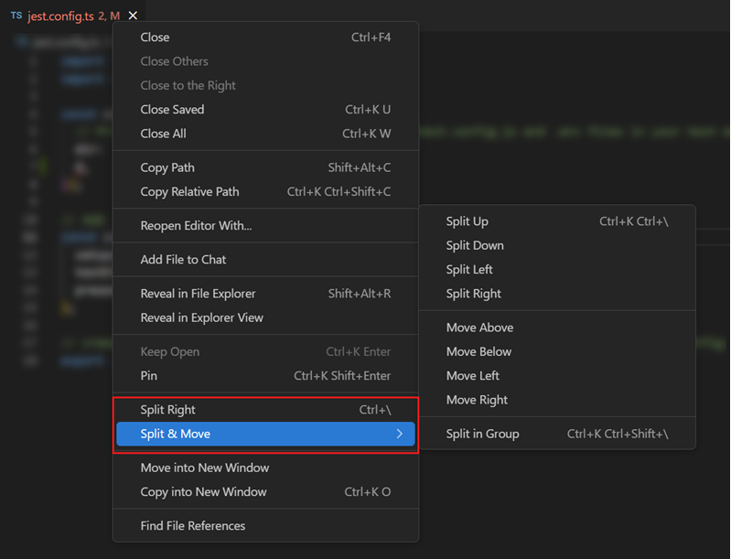
Split（拆分）编辑器命令也可从 查看 > Editor Layout（编辑器布局）菜单和命令面板中找到。
如果你想在垂直和水平编辑器组布局之间快速切换，可以使用 Toggle Vertical/Horizontal Editor Layout（切换垂直/水平编辑器布局）命令（kb(workbench.action.toggleEditorGroupLayout)）。
最大化和展开编辑器组
当你使用多个编辑器组时，你可以临时为活动组提供更多空间。双击编辑器标签页可切换其编辑器组的大小，或使用 View: Toggle Maximize Editor Group（视图：切换最大化编辑器组）命令（kb(workbench.action.toggleMaximizeEditorGroup)）。
Workbench > Editor: Double Click Tab To Toggle Editor Group Sizes（setting(workbench.editor.doubleClickTabToToggleEditorGroupSizes)）设置控制双击标签页时编辑器组的调整方式：
expand：编辑器组通过使所有其他编辑器组尽可能小来占用尽可能多的空间。这是默认设置。maximize：所有其他编辑器组被隐藏，当前编辑器组最大化以填充整个编辑器区域。off：双击标签页时不调整任何编辑器组的大小。
此设置仅在 setting(workbench.editor.showTabs) 设为 multiple 时适用。
组内拆分
你还可以使用 View: Split Editor in Group（视图：在组中拆分编辑器）命令（kb(workbench.action.splitEditorInGroup)）在同一组中拆分编辑器以实现并排编辑。
使用组内拆分功能时，有专门的命令用于切换此模式和在两个拆分编辑器之间导航：
- View: Split Editor in Group（视图：在组中拆分编辑器）- 拆分当前编辑器。
- View: Toggle Split Editor in Group（视图：切换组内拆分编辑器）- 切换活动编辑器的拆分模式。
- View: Join Editor in Group（视图：合并组内编辑器）- 将活动文件恢复为单个编辑器。
- View: Toggle Layout of Split Editor in Group（视图：切换组内拆分编辑器布局）- 在水平和垂直布局之间切换。
在两侧之间导航：
- View: Focus First Side in Active Editor（视图：聚焦活动编辑器的第一侧）- 将焦点移到拆分编辑器的第一（左侧或顶部）侧。
- View: Focus Second Side in Active Editor（视图：聚焦活动编辑器的第二侧）- 将焦点移到第二（右侧或底部）侧。
- View: Focus Other Side in Active Editor（视图：聚焦活动编辑器的另一侧）- 在拆分编辑器的两侧之间切换。
Workbench > Editor: Split in Group Layout（setting(workbench.editor.splitInGroupLayout)）设置允许你将首选拆分编辑器布局设置为水平（默认）或垂直。
网格布局
如果你想更好地控制编辑器组布局，可以使用网格布局，在其中你可以拥有多行多列的编辑器组。查看 > Editor Layout（编辑器布局）菜单列出了各种编辑器布局选项（例如，Two Columns（两列）、Three Columns（三列）、Grid (2x2)（网格 2x2）），你还可以通过抓取和移动它们之间的分隔条来调整组大小。
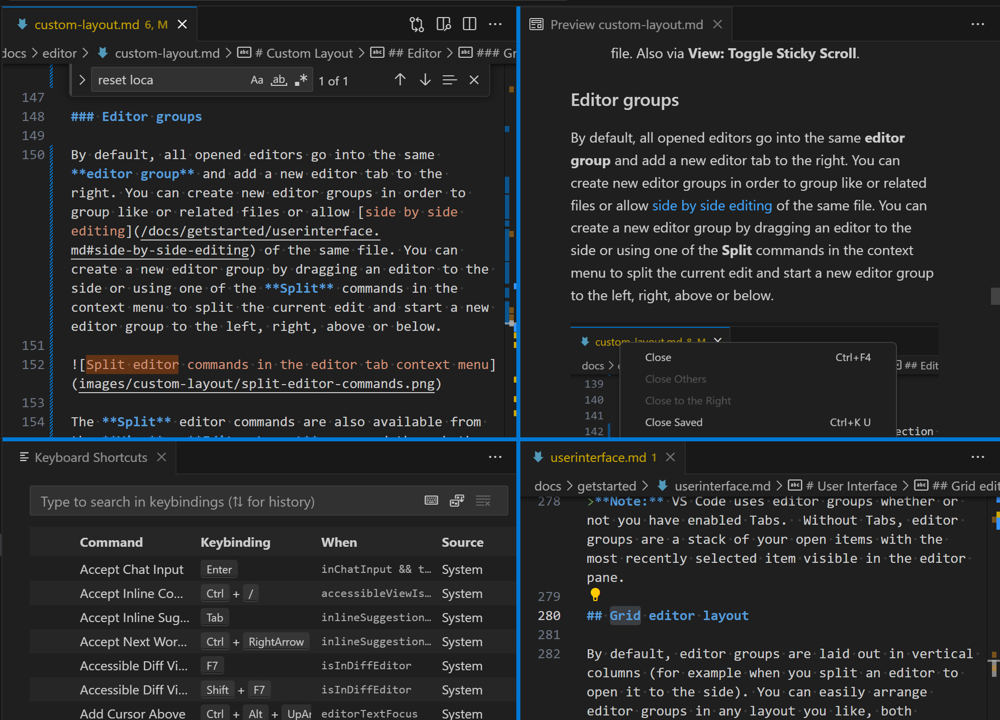
浮动窗口
你可以在浮动窗口中打开编辑器、终端或特定视图。这在多显示器设置中非常有用，你可以将编辑器移动到另一个显示器，甚至同一显示器的不同位置。
要在浮动窗口中打开编辑器，请将其拖出主窗口并放置到当前 VS Code 窗口之外的任何位置。
浮动窗口可以在网格布局中打开任意数量的编辑器。这些窗口将在重启后恢复到其位置，并重新打开其中的所有编辑器。
另一种分离编辑器的方法是右键单击编辑器标签页，选择 Move into New Window（移到新窗口）（workbench.action.moveEditorToNewWindow）或 Copy into New Window（复制到新窗口）（kb(workbench.action.copyEditorToNewWindow)）选项。
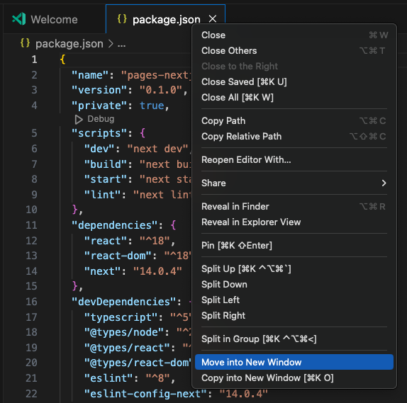
要移动整个编辑器组，请使用 Move Editor Group into New Window（将编辑器组移到新窗口）（kb(workbench.action.moveEditorGroupToNewWindow)）或 Copy Editor Group into New Window（将编辑器组复制到新窗口）（kb(workbench.action.copyEditorGroupToNewWindow)）命令。
紧凑模式
要移除浮动窗口中不必要的 UI 元素并为内容腾出更多空间，请在浮动窗口标题栏中选择 Set Compact Mode（设置紧凑模式）选项。再次选择可恢复浮动窗口到其原始模式。
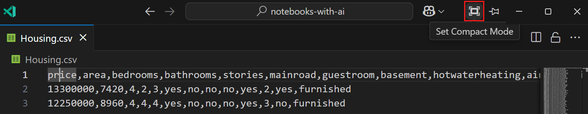
置顶
你可以通过选择浮动窗口标题栏中的 Set Always on Top（设置始终置顶）选项将浮动窗口固定在屏幕顶部。这对于在主要 VS Code 窗口中工作时始终保持终端或预览窗口可见非常有用。再次选择可取消固定浮动窗口。
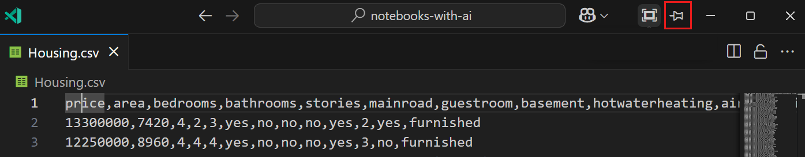
固定标签页
如果你希望某个编辑器标签页始终可见，可以将其固定在编辑器标签栏上。你可以通过上下文菜单或使用 View: Pin Editor（视图：固定编辑器）命令（kb(workbench.action.pinEditor)）来固定编辑器标签页。
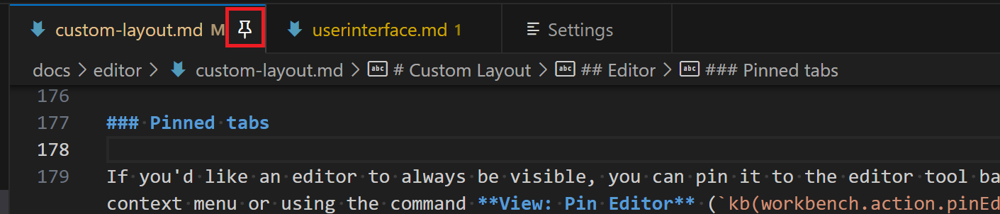
固定标签页有助于访问对你重要的文件，因为：
- 固定标签页始终显示在非固定标签页之前。
- 即使打开了多个标签页，它们也不会滚出视图。
- 使用编辑器标签页命令（如 Close Others（关闭其他）或 Close All（全部关闭））时，它们不会被关闭。
- 即使超过设置的最大打开编辑器数量限制，它们也不会被关闭。
通过点击固定图标、使用 Unpin（取消固定）编辑器标签页上下文菜单项或 View: Unpin Editor（视图：取消固定编辑器）命令来取消固定编辑器。
你可以使用 Workbench > Editor: Pinned Tab Sizing（setting(workbench.editor.pinnedTabSizing)）设置来选择固定编辑器的显示方式。选项包括：
normal：固定标签页继承其他标签页的外观（默认）shrink：固定标签页缩小为固定大小，显示编辑器标签的部分内容。compact：固定标签页仅显示为图标或编辑器标签的首字母。
你还可以通过将 Workbench > Editor: Pinned Tabs On Separate Row 设置为在常规编辑器标签栏上方单独一行显示固定编辑器标签页。你可以通过在两行之间拖放标签页来固定和取消固定编辑器。
锁定编辑器组
当使用多个编辑器时，通常你会想要始终保持一个或多个编辑器可见。锁定编辑器组功能使你能够锁定整个编辑器组并使其保持可见，从而提供稳定的显示，任何打开新编辑器的请求都将在另一个组中创建。你可以通过编辑器组工具栏中的锁定图标来判断编辑器组是否被锁定。
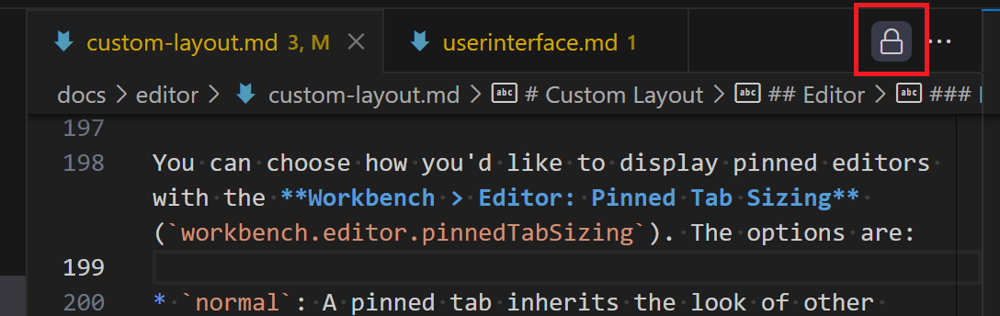
你可以通过从编辑器工具栏 More Actions（更多操作）... 下拉菜单中选择 Lock Group（锁定组）或运行 View: Lock Editor Group（视图：锁定编辑器组）命令来锁定编辑器组。
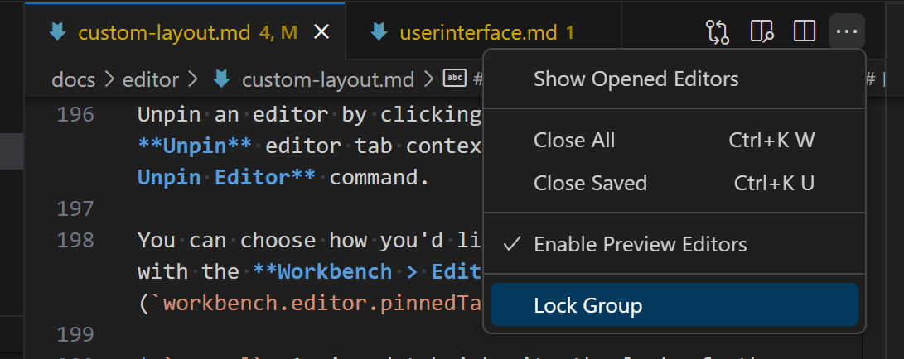
你可以通过点击锁定图标或运行 View: Unlock Editor Group（视图：解锁编辑器组）命令来解锁编辑器组。
锁定组的行为与未锁定组不同：
- 新编辑器不会在锁定组中打开，除非明确移动过去（例如，通过拖放）。
- 如果新编辑器跳过锁定组，它将在最近使用的未锁定组中打开，或在锁定组旁边创建一个新组。
- 编辑器组的锁定状态会被持久保留，并在重启后恢复。
- 你也可以锁定空组，从而实现更稳定的编辑器布局。
主要使用场景是编辑器区域中的终端。例如，你可能想在左侧编辑文本，在右侧有一个始终可见的终端。当创建终端编辑器并移到一侧时，它将自动锁定。这意味着即使右侧终端获得焦点，打开文件时也会在左侧打开，无需先手动更改焦点。
可以使用 setting(workbench.editor.autoLockGroups) 设置来配置自动锁定组，该设置默认仅适用于终端编辑器，但可以添加任何编辑器类型以获得相同的行为。
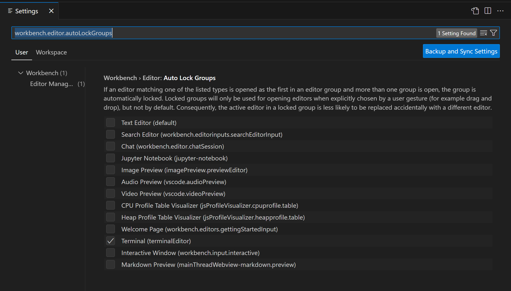
与编辑器组锁定相关的命令：
- View: Lock Editor Group（视图：锁定编辑器组）- 锁定活动编辑器组。
- View: Unlock Editor Group（视图：解锁编辑器组）- 解锁活动的已锁定编辑器组。
- View: Toggle Editor Group Lock（视图：切换编辑器组锁定）- 锁定或解锁活动编辑器组。
你必须拥有多个编辑器组，这些命令才可用。
后续步骤
继续阅读以了解：
- Visual Studio Code 用户界面 - VS Code 快速入门指南。
- 基本编辑 - 了解强大的 VS Code 编辑器。
- 代码导航 - 在源代码中快速移动。